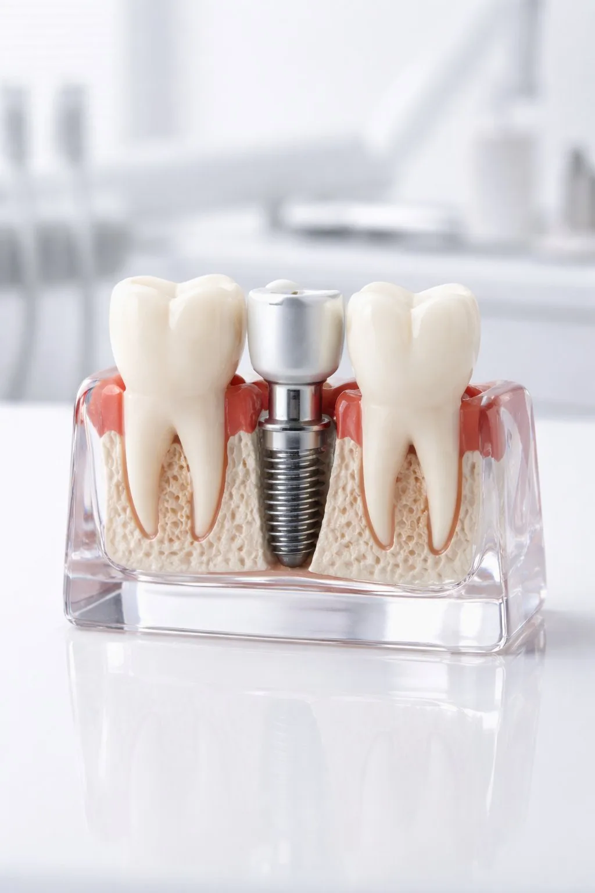

La Dra. Carmen López Carriches, especialista en implantología y profesora de Cirugía Bucal en la UCM, realiza implantes de titanio de alta calidad en Madrid y Talavera. Recupera tu sonrisa y funcionalidad completa.
Un implante dental es una raíz artificial de titanio que sustituye la raíz de un diente perdido. Sobre él se coloca una corona que imita perfectamente el aspecto y función de un diente natural.
Es la solución más avanzada y duradera para reponer dientes perdidos. Fijos, se cuidan igual que los dientes naturales. En Dental Carriches realizamos implantes unitarios, múltiples y rehabilitaciones completas.
En pacientes de edad avanzada con pérdida total de dientes, la colocación de dos implantes en la mandíbula para sujetar una prótesis completa es la solución ideal: aporta estabilidad y comodidad sin necesidad de una rehabilitación más compleja.

Exploración completa, radiografías y estudio personalizado del caso.
Intervención quirúrgica mínimamente invasiva bajo anestesia local. Sin dolor.
El implante se fusiona con el hueso durante 2-3 meses garantizando su estabilidad.
Colocación de la corona o prótesis a medida.
No. La intervención se realiza con anestesia local y es completamente indolora. Puede haber leve molestia los primeros días, controlable con medicación habitual.
Entre 3 y 6 meses desde la colocación hasta la corona definitiva, tiempo necesario para la osteointegración.
No necesariamente. Si hay pérdida ósea podemos realizar regeneración ósea previa o simultánea.
Varía según el caso. En la primera consulta te damos presupuesto detallado sin compromiso.
Sin compromiso · Primera consulta de valoración